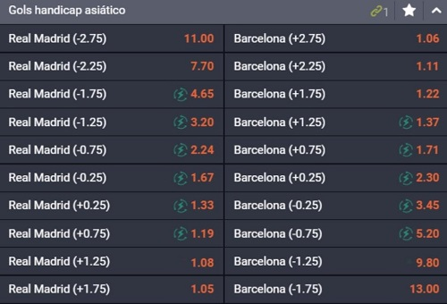
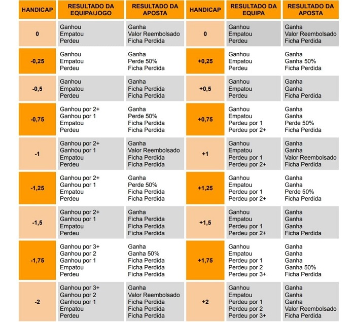

Handicap Asiático – Como funciona na Bantu bet?
O que é o handicap asiático?
O handicap asiático é um dos principais mercados de aposta da Bantu Bet onde uma equipa é favorita em relação a outra. A principal diferença em relação ao handicap convencional é que o handicap asiático oferece a possibilidade de anular a aposta em caso de empate, o que pode reduzir o risco para o apostad
Com funciona handicap asiático
Para entendermos como funciona, vejamos o exemplo do jogo entre o Real Madrid X Barcelona onde claramente o Real Madrid é o favorito:
O handicap asiático é expresso em termos de um valor numérico, que representa uma vantagem ou desvantagem concedida a uma das equipas.
Por exemplo, se uma equipa é considerada favorita, ela pode ter um handicap negativo, enquanto a equipa menos favorita pode ter um handicap positivo.
Se você apostar no handicap negativo de uma equipa, ela deve vencer por uma margem maior do que o handicap para que você vença a aposta. Se você apostar no handicap positivo da outra equipa, ela pode perder por uma margem menor do que o handicap, empatar ou vencer a partida para que você vença a aposta.
Tabela Handicap Asiático
Vantagem do Handicap Asiático
A principal vantagem do handicap asiático é que ele oferece uma maneira de apostar em equipas menos favoritas, oferecendo uma vantagem em termos de pontos ou golos. Ao mesmo tempo, a possibilidade de anular a aposta em caso de empate pode reduzir o risco para o apostador, tornando o handicap asiático uma opção popular entre os apostadores angolanos
.